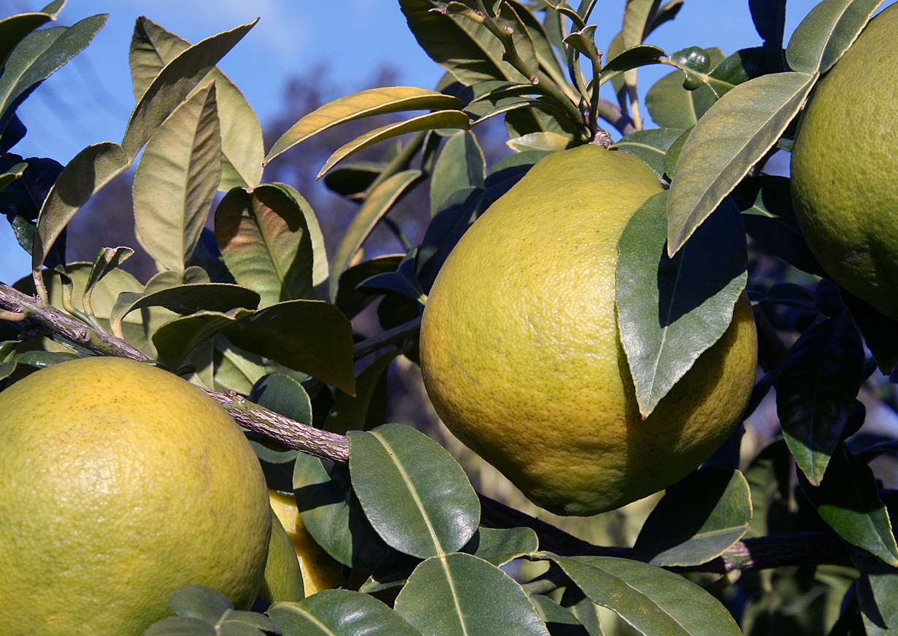

A large, thick-rinded semi-wild citrus of the Northeast India–Sylhet hill country, grown for the intensely aromatic rind that defines a signature Sylheti dish. Its botany and its chemistry are already on the record. What we bring is the still, and the discipline to document every lot that leaves it.

Satkora — also written shatkora, hatkora or hatkhora (Sylheti/Bengali শাতকরা/হাতকরা), and known to English-language botany as the Melanesian papeda or wild orange — is a large, thorny, semi-wild citrus from the old papeda lineage, a group that sits near the root of the entire Citrus family tree. Where the gondhoraj’s very identity is contested, satkora’s is not: essentially every peer-reviewed study out of Northeast India treats it as a single, settled species, Citrus macroptera Montr., named for the oversized “winged” petiole beneath each leaf.
What distinguishes it commercially is scale and use. The fruit runs 6–12.5 cm across — large for a citrus — with a thick, fleshy, intensely aromatic rind up to 1.75 cm deep that is the entire point of growing it. The pulp is dry and bitter by reputation, though measured juice content actually swings from 13% to 82% across wild seedling trees; what holds true across all of them is that nobody grows satkora for its juice. They grow it for the rind.
That rind already carries a proven market — it is a staple ingredient with a devoted diaspora behind it. What has not existed until now is the oil, distilled and documented at origin. That is the gap Raima was built to close.
Satkora peel oil reads as citrus first — sharp, bright, immediately recognisable — then turns into something far less common: spicy, resinous and creamy, a dry citrus that echoes the sharpness of kaffir lime but sits softer and deeper underneath it. That warm, faintly bitter woody-spice register is genuinely rare in Western perfumery, and it is the reason to reach for this material rather than a conventional lime.
Worth saying clearly: satkora is not kaffir lime by another name. Kaffir lime leaf oil is built almost entirely around one molecule, citronellal (roughly 78%). Satkora’s leaf oil runs a completely different register — sabinene, β-pinene and linalool — while its peel oil is dominated instead by limonene. Two citrus fruits, two distinct chemical fingerprints.
bright, citric, sharp
warm, resinous, dry
deep, kaffir-adjacent, softer
the signature curry note
Satkora is a botanical where the chemistry starts from a real, published chemotype rather than a blank page. Multiple independent GC-MS studies — from Northeast India, Mizoram, Bangladesh and beyond — agree the peel oil is limonene-dominant. They disagree, sometimes sharply, on how dominant: reported limonene content swings from roughly 23% to 87% depending on the study and the individual tree. That spread is real, not measurement error — satkora is still unselected, seed-grown germplasm, so no two trees are chemically identical. Selection is part of the work.
| Study (origin) | Dominant peel-oil compounds | Limonene |
|---|---|---|
| Rana & Blázquez 2012 | Limonene, β-caryophyllene, geranial | 55.3% |
| Miah 2010 (var. annamensis) | Limonene, δ-cadinene, α-terpineol | 73.5% |
| Shourove 2025 (Bangladesh) | Limonene, isoeugenol, eugenol acetate | 56.4% |
| Dutta 2024 (NE India) | D-limonene, α-terpineol, linalool | 86.8% |
| Baccati / Luro 2021 | Limonene, sabinene, linalool, terpinen-4-ol | 53.8% |
| Bhutia 2019 (NE India) | Limonene, α-terpineol, myrcene | 22.7% |
Six independently authored GC-MS studies of Citrus macroptera peel oil [1–6]. Limonene is consistently the lead compound; its share is not — which is exactly why a single literature number can never stand in for a batch chromatogram.
| Compound | Class | Note / role |
|---|---|---|
| Sabinene | Monoterpene | Green-woody; a leaf-oil lead compound |
| β-Pinene | Monoterpene | Fresh, resinous |
| Linalool | Alcohol | Floral lift |
| Terpinen-4-ol | Alcohol | Peppery-warm facet |
| Methyl anthranilate-type profile | Ester (species-variable) | Reported in a separate NE-India study; unusual for citrus leaf |
Leaf oil is not a weaker version of peel oil — it runs a different chemistry altogether [3][4], which makes peel and leaf two distinct products for two distinct buyers. The leaf stream comes off pruning biomass, and we distil it alongside the peel.
| Method (basis) | Yield |
|---|---|
| Hydrodistillation, fresh peel | 0.11–0.53% |
| Hydrodistillation, dried peel | 0.20% |
| Hydrodistillation, fresh peel (higher-yield study) | 1.43% |
| Sonication-assisted hydrodistillation, optimised | 1.87% |
| Hydrodistillation, leaf | 0.46% |
Published yields span roughly 0.11–1.9% w/w — a spread driven as much by extraction method as by biology [5]. One 2025 study lifted yield 3–6× over a conventional baseline using sonication-assisted hydrodistillation alone, before any change to the fruit. Process is a real lever on this botanical, and we treat it as one. No cold-press data exists for the species despite cold-press being the industry norm for citrus peel — open ground, and we intend to work it.
The studies above map what Citrus macroptera can be across its range. They are a guide to the material — not a substitute for a specification.
Every lot we release is distilled from our own feedstock, characterised by GC-MS, and shipped with the chromatogram attached. The number that matters to a formulator is the one on the batch in front of them.
Kew’s Plants of the World Online and GBIF’s taxonomic backbone list Citrus macroptera Montr. as a synonym of Citrus hystrix — true kaffir lime — at the level of formal nomenclature. Almost none of the applied agricultural or phytochemical literature follows that lumping: ICAR, NBPGR and UC Riverside’s citrus collection all treat it as its own species, because commercially and agriculturally it is a completely different thing from kaffir lime — a large, thick-rind curry fruit, not a small, bumpy leaf crop. We use Citrus macroptera Montr. because that is what the working science uses and it correctly identifies the plant. A technical buyer working from Kew’s taxonomy may raise the point; we would rather raise it first.
Three varieties are on record — annamensis, kerrii and combara — and it is specifically the annamensis oil that the literature ties to perfumery use, which is why variety selection is part of how we plant. Satkora should not be confused with true kaffir lime (Citrus hystrix, grown for leaf), with Citrus micrantha (a different ancestral papeda), or with Citrus macrophylla / alemow — an unrelated rootstock species that shares only a similar-sounding name.
Long before satkora is an essential oil, it is a name that signals where a family is from. Beef shatkora — beef slow-cooked with warm spice and chunks of the citrus rind, which soften and release a sharp, faintly bitter perfume into the dish — is the signature preparation, alongside mutton, fish and dal versions across Sylheti, Bangladeshi and Northeast Indian kitchens. In the UK, where the British-Bangladeshi community runs the large majority of the country’s Indian restaurant trade, a “beef shatkora” on the menu is a specific, legible marker of Sylheti origin — not a generic curry-house flourish.
That cultural weight is the aromatic argument too. A material people already recognise by smell, across a whole cuisine, arrives in a perfumer’s hands with meaning attached. The rind’s food heritage is established and documented; the oil is the newer expression of the same fruit.
Citrus macroptera grows semi-wild across the belt we work in — the Jampui Hills of Tripura, the same range known for the state’s oranges, and on through Assam’s Barak Valley, Mizoram and Sylhet, the crop’s cultural heartland. It is a fruit of this hill country in the way few aromatic crops genuinely are: not introduced, not adapted, simply at home.
Wild populations are reported as declining under shifting cultivation and forest clearing. That settles our method rather than raising a question: our satkora comes from cultivated stock, planted and managed for oil, and every lot is traceable to the grove it came from. Wild-collected fruit has no place in a provenance house.